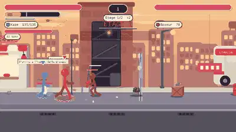
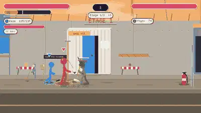
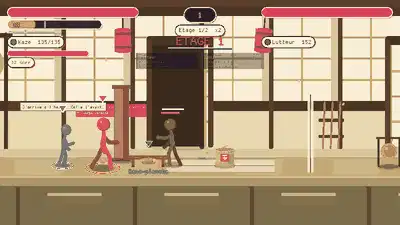
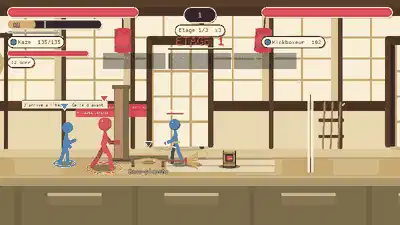
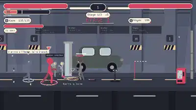
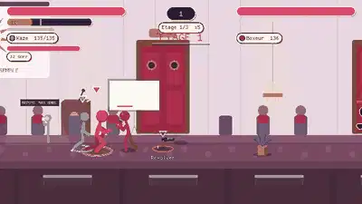
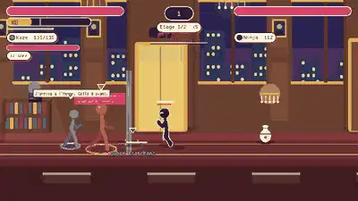
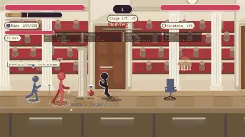

Retour : « a chaque mort on est sur un nouveau terrain, il n'y a plus d'evolution ». Cause : le salon relancait une partie avec une nouvelle graine et un autre niveau a chaque fin. Nouveau principe, a la Binding of Isaac : une partie = une run de 4 chapitres, un type de niveau par chapitre, du contenu procedural qui reste toujours coherent avec le lieu.
Les ronds pleins/cerclés sont les 3 niveaux puis le boss (rond large). 16 niveaux au total.
Chaque ligne vient du vrai generateur (run_coop::floor). Mêmes graines = mêmes niveaux pour tous les joueurs. Tout appartient au lieu : décor, danger, faction, armes.
Vrai moteur, deux héros, IA qui joue. Un type de niveau par chapitre, des ennemis de la faction du lieu.

Niveau 1 : la Ruelle du quartier est
Boss du chapitre 1 : le Chantier
Chapitre 2, niveau 1 : le Dojo souterrain
Boss du chapitre 2 : le Maître Noir
Chapitre 3, niveau 1 : le Parking -3
Boss du chapitre 3 : le Séminaire
Chapitre 4, niveau 1 : l'Étage présidentiel
Boss final : le Sénat